# ========================================================================================================================
# ПРАКТИЧЕСКОЕ ЗАНЯТИЕ: СТАНДАРТИЗАЦИЯ CPUE С ИСПОЛЬЗОВАНИЕМ GLM, GAM И GAMM
# Курс: "Оценка водных биоресурсов в среде R (для начинающих)"
# Автор: Баканев С.В.
# Дата: 20.08.2025
#
# Структура:
# 1) Загрузка пакетов и настройка среды
# 2) Загрузка и предварительная обработка данных
# 3) Вспомогательные функции для расчета индексов
# 4) Моделирование GLM (Gamma с лог-ссылкой)
# 5) Моделирование GAM (обобщенная аддитивная модель)
# 6) Моделирование GAMM (смешанная модель со случайными эффектами)
# 7) Сравнение моделей и финальная визуализация результатов
# ========================================================================================================================
# ==============================================================================
# БЛОК 1: ЗАГРУЗКА ПАКЕТОВ И НАСТРОЙКА СРЕДЫ
# ==============================================================================
# Отключаем вспомогательные сообщения при загрузке пакетов
suppressPackageStartupMessages({
library(tidyverse) # Основные пакеты для обработки данных и визуализации
library(readxl) # Чтение данных из Excel-файлов
library(mgcv) # Обобщенные аддитивные модели (GAM)
library(gamm4) # GAM со смешанными эффектами
library(emmeans) # Расчет маргинальных средних и контрастов
library(broom) # Преобразование результатов моделей в таблицы
library(broom.mixed) # Поддержка смешанных моделей для broom
library(DHARMa) # Диагностика остатков обобщенных моделей
library(knitr) # Форматирование таблиц для отчетов
})
# Установка рабочей директории
setwd("C:/GLM/")
# Фиксируем случайное зерно для воспроизводимости результатов
set.seed(42)
# ==============================================================================
# БЛОК 2: ЗАГРУЗКА И ПРЕДОБРАБОТКА ДАННЫХ
# ==============================================================================
# Определяем путь к файлу с данными
DATA_PATH <- "C:/GLM/data/KARTOGRAPHIC.xlsx"
# Чтение данных из листа "FISHERY" и фильтрация осенних месяцев
DATA <- read_excel(DATA_PATH, sheet = "FISHERY") %>%
as_tibble() %>% # Преобразуем в современный формат таблицы
filter(MONTH > 8 & MONTH < 12) # Сентябрь-ноябрь (осенний сезон)
# Преобразование типов переменных и обработка пропусков
DATA <- DATA %>%
mutate(
YEAR = as.factor(YEAR), # Год как категориальная переменная
MONTH = as.factor(MONTH), # Месяц как фактор
CALL = as.factor(CALL), # Идентификатор судна
REGION = as.factor(REGION), # Рыбохозяйственный район
VESSELNUMBER = as.factor(VESSELNUMBER), # Номер судна
CPUE = as.numeric(CPUE) # Целевой показатель - улов на усилие
) %>%
filter(!is.na(CPUE)) # Удаление строк с пропусками в CPUE
# Обработка нулевых значений CPUE для Gamma-моделей
if (any(DATA$CPUE <= 0, na.rm = TRUE)) {
min_pos <- min(DATA$CPUE[DATA$CPUE > 0], na.rm = TRUE) # Минимальный положительный улов
offset <- min_pos / 2 # Величина поправки
DATA <- DATA %>%
mutate(CPUE_POS = if_else(CPUE <= 0, CPUE + offset, CPUE)) # Добавляем поправку
} else {
DATA <- DATA %>%
mutate(CPUE_POS = CPUE) # Исходные данные если нулей нет
}
# Рассчитываем медианные значения CPUE по годам из исходных данных
actual_medians <- DATA %>%
group_by(YEAR) %>%
summarise(median_cpue = median(CPUE, na.rm = TRUE))
# Рассчитываем медианные значения CPUE по годам из исходных данных для последующих графиков
actual_medians# A tibble: 6 x 2
YEAR median_cpue
<fct> <dbl>
1 2019 200.
2 2020 116.
3 2021 132.
4 2022 84
5 2023 79.4
6 2024 58.3# Экспресс-визуализация распределения CPUE по годам
DATA %>%
ggplot(aes(x = YEAR, y = CPUE)) +
geom_boxplot(outlier.alpha = 0.2) +
labs(title = "Распределение CPUE по годам",
x = "Год",
y = "CPUE (улов на усилие)")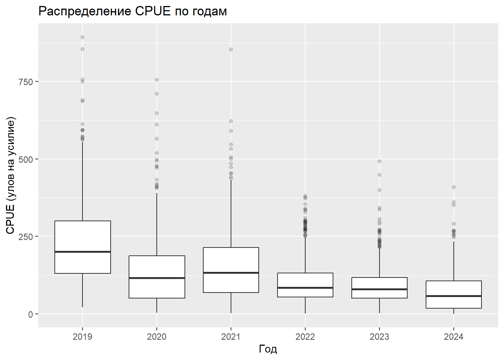
# ==============================================================================
# БЛОК 3: ВСПОМОГАТЕЛЬНЫЕ ФУНКЦИИ ДЛЯ РАСЧЕТА ИНДЕКСОВ
# ==============================================================================
# Функция нормировки индексов
scale_to_index <- function(values, method = c("mean", "first")) {
method <- match.arg(method)
if (method == "mean") {
# Нормировка на среднее значение
return(as.numeric(values) / mean(as.numeric(values), na.rm = TRUE))
}
if (method == "first") {
# Нормировка на значение первого года
return(as.numeric(values) / as.numeric(values[1]))
}
}
# Функция расчета индексов для GLM/GAM через маргинальные средние
emmeans_standardized_index <- function(model, variable = "YEAR") {
out <- suppressWarnings(
emmeans(model,
specs = as.formula(paste0("~ ", variable)),
type = "response")
)
df <- as_tibble(out) %>%
select(!!sym(variable), response = response, lower.CL, upper.CL)
colnames(df) <- c("YEAR", "value", "lcl", "ucl")
df
}
# Функция расчета индексов для GAMM через бутстреп
compute_standardized_index <- function(model, base_data, year_levels, predict_fun,
response_transform = identity,
n_boot = 200L,
seed = 7L) {
set.seed(seed)
acc <- vector("list", length(year_levels))
for (i in seq_along(year_levels)) {
newdata <- base_data
newdata$YEAR <- factor(year_levels[i], levels = levels(base_data$YEAR))
preds <- suppressWarnings(predict_fun(model, newdata))
mu <- mean(response_transform(preds), na.rm = TRUE)
# Бутстреп для оценки неопределенности
boot_vals <- replicate(n_boot, {
idx <- sample.int(nrow(base_data), nrow(base_data), replace = TRUE)
bd <- newdata[idx, , drop = FALSE]
p <- suppressWarnings(predict_fun(model, bd))
mean(response_transform(p), na.rm = TRUE)
})
ci <- quantile(boot_vals, c(0.025, 0.975), na.rm = TRUE)
acc[[i]] <- tibble(YEAR = year_levels[i], value = mu, lcl = ci[[1]], ucl = ci[[2]])
}
bind_rows(acc)
}
# ==============================================================================
# БЛОК 4: МОДЕЛИРОВАНИЕ GLM (GAMMA С ЛОГ-ССЫЛКОЙ)
# ==============================================================================
# Подбор модели с фиксированными эффектами
glm_gamma_fit <- glm(
CPUE_POS ~ YEAR + MONTH + CALL + REGION, # Формула с факторными предикторами
family = Gamma(link = "log"), # Гамма-распределение с логарифмической связью
data = DATA
)
# Диагностика модели
summary(glm_gamma_fit) # Стандартная сводка модели
Call:
glm(formula = CPUE_POS ~ YEAR + MONTH + CALL + REGION, family = Gamma(link = "log"),
data = DATA)
Coefficients:
Estimate Std. Error t value
(Intercept) 5.57642 0.07942 70.216
YEAR2020 -0.22713 0.04586 -4.953
YEAR2021 -0.22438 0.04557 -4.924
YEAR2022 -0.64329 0.04345 -14.806
YEAR2023 -0.77311 0.04647 -16.637
YEAR2024 -1.12817 0.05157 -21.879
MONTH10 -0.13725 0.02443 -5.617
MONTH11 -0.13714 0.03540 -3.874
CALLUAAK -0.29534 0.06092 -4.848
CALLUAKC -0.53490 0.06381 -8.382
CALLUBEV -3.67233 0.12187 -30.133
CALLUBQQ -0.35433 0.07057 -5.021
CALLUBSR -0.33516 0.06266 -5.349
CALLUBUR -0.58246 0.06175 -9.433
CALLUBYT -0.21520 0.06088 -3.535
CALLUCFF -0.06756 0.09825 -0.688
CALLUCXF -2.34302 0.10638 -22.025
CALLUDII -0.46287 0.05710 -8.107
CALLUDUT -1.02162 0.07550 -13.532
CALLUDWM -2.42502 0.09480 -25.582
CALLUEBK 0.25852 0.13371 1.934
CALLUEMO -0.17024 0.08103 -2.101
CALLUENZ 0.04928 0.06442 0.765
CALLUFIK 0.29700 0.13043 2.277
CALLUGXE -0.56384 0.06265 -9.000
CALLUIVO -0.21572 0.06500 -3.319
REGIONCEB.-ЦEHTPAЛЬHЫЙ P-H 0.16521 0.46672 0.354
REGIONCEB.CKЛOH MУPMAHCKOГO MEЛKOBOДЬЯ -0.07615 0.15513 -0.491
REGIONCEBEPO-KAHИHCKAЯ БAHKA 0.16332 0.08236 1.983
REGIONKAHИHCKAЯ БAHKA 0.06291 0.07875 0.799
REGIONKAHИHCKO- KOЛГУEBCKOE MEЛKOBOДЬE(CEB.CKЛOH) 0.21310 0.08519 2.501
REGIONKAHИHCKO-KOЛГУEBCKOE MEЛKOBOДЬE 0.18223 0.07757 2.349
REGIONMУPMAHCKOE MEЛKOBOДЬE 0.07737 0.07753 0.998
REGIONЗAП.-ПPИБPEЖHЫЙ P-H 0.72882 0.46327 1.573
REGIONЗAП.-ЦEHTPAЛЬHЫЙ P-H 0.13328 0.08416 1.584
REGIONЗAП.CKЛOH ГУCИHOЙ БAHKИ 0.64238 0.11646 5.516
REGIONЮЖ.CKЛOH ГУCИHOЙ БAHKИ 0.69320 0.13068 5.305
Pr(>|t|)
(Intercept) < 2e-16 ***
YEAR2020 7.62e-07 ***
YEAR2021 8.85e-07 ***
YEAR2022 < 2e-16 ***
YEAR2023 < 2e-16 ***
YEAR2024 < 2e-16 ***
MONTH10 2.08e-08 ***
MONTH11 0.000109 ***
CALLUAAK 1.30e-06 ***
CALLUAKC < 2e-16 ***
CALLUBEV < 2e-16 ***
CALLUBQQ 5.36e-07 ***
CALLUBSR 9.37e-08 ***
CALLUBUR < 2e-16 ***
CALLUBYT 0.000413 ***
CALLUCFF 0.491691
CALLUCXF < 2e-16 ***
CALLUDII 6.93e-16 ***
CALLUDUT < 2e-16 ***
CALLUDWM < 2e-16 ***
CALLUEBK 0.053247 .
CALLUEMO 0.035718 *
CALLUENZ 0.444299
CALLUFIK 0.022839 *
CALLUGXE < 2e-16 ***
CALLUIVO 0.000913 ***
REGIONCEB.-ЦEHTPAЛЬHЫЙ P-H 0.723377
REGIONCEB.CKЛOH MУPMAHCKOГO MEЛKOBOДЬЯ 0.623533
REGIONCEBEPO-KAHИHCKAЯ БAHKA 0.047425 *
REGIONKAHИHCKAЯ БAHKA 0.424416
REGIONKAHИHCKO- KOЛГУEBCKOE MEЛKOBOДЬE(CEB.CKЛOH) 0.012413 *
REGIONKAHИHCKO-KOЛГУEBCKOE MEЛKOBOДЬE 0.018863 *
REGIONMУPMAHCKOE MEЛKOBOДЬE 0.318379
REGIONЗAП.-ПPИБPEЖHЫЙ P-H 0.115753
REGIONЗAП.-ЦEHTPAЛЬHЫЙ P-H 0.113361
REGIONЗAП.CKЛOH ГУCИHOЙ БAHKИ 3.69e-08 ***
REGIONЮЖ.CKЛOH ГУCИHOЙ БAHKИ 1.19e-07 ***
---
Signif. codes: 0 '***' 0.001 '**' 0.01 '*' 0.05 '.' 0.1 ' ' 1
(Dispersion parameter for Gamma family taken to be 0.4172272)
Null deviance: 2980.2 on 3890 degrees of freedom
Residual deviance: 1785.6 on 3854 degrees of freedom
AIC: 42851
Number of Fisher Scoring iterations: 11# Таблица коэффициентов в форматированном виде
broom::tidy(glm_gamma_fit) %>%
mutate(across(estimate:statistic, ~round(.x, 4))) %>%
kable(caption = "Коэффициенты GLM модели", align = "lrrrr")| term | estimate | std.error | statistic | p.value |
|---|---|---|---|---|
| (Intercept) | 5.5764 | 0.0794 | 70.2164 | 0.0000000 |
| YEAR2020 | -0.2271 | 0.0459 | -4.9530 | 0.0000008 |
| YEAR2021 | -0.2244 | 0.0456 | -4.9236 | 0.0000009 |
| YEAR2022 | -0.6433 | 0.0434 | -14.8059 | 0.0000000 |
| YEAR2023 | -0.7731 | 0.0465 | -16.6372 | 0.0000000 |
| YEAR2024 | -1.1282 | 0.0516 | -21.8785 | 0.0000000 |
| MONTH10 | -0.1372 | 0.0244 | -5.6170 | 0.0000000 |
| MONTH11 | -0.1371 | 0.0354 | -3.8736 | 0.0001090 |
| CALLUAAK | -0.2953 | 0.0609 | -4.8479 | 0.0000013 |
| CALLUAKC | -0.5349 | 0.0638 | -8.3823 | 0.0000000 |
| CALLUBEV | -3.6723 | 0.1219 | -30.1334 | 0.0000000 |
| CALLUBQQ | -0.3543 | 0.0706 | -5.0213 | 0.0000005 |
| CALLUBSR | -0.3352 | 0.0627 | -5.3488 | 0.0000001 |
| CALLUBUR | -0.5825 | 0.0618 | -9.4326 | 0.0000000 |
| CALLUBYT | -0.2152 | 0.0609 | -3.5347 | 0.0004130 |
| CALLUCFF | -0.0676 | 0.0982 | -0.6877 | 0.4916914 |
| CALLUCXF | -2.3430 | 0.1064 | -22.0254 | 0.0000000 |
| CALLUDII | -0.4629 | 0.0571 | -8.1065 | 0.0000000 |
| CALLUDUT | -1.0216 | 0.0755 | -13.5319 | 0.0000000 |
| CALLUDWM | -2.4250 | 0.0948 | -25.5817 | 0.0000000 |
| CALLUEBK | 0.2585 | 0.1337 | 1.9335 | 0.0532474 |
| CALLUEMO | -0.1702 | 0.0810 | -2.1009 | 0.0357185 |
| CALLUENZ | 0.0493 | 0.0644 | 0.7650 | 0.4442989 |
| CALLUFIK | 0.2970 | 0.1304 | 2.2770 | 0.0228387 |
| CALLUGXE | -0.5638 | 0.0627 | -8.9996 | 0.0000000 |
| CALLUIVO | -0.2157 | 0.0650 | -3.3187 | 0.0009126 |
| REGIONCEB.-ЦEHTPAЛЬHЫЙ P-H | 0.1652 | 0.4667 | 0.3540 | 0.7233768 |
| REGIONCEB.CKЛOH MУPMAHCKOГO MEЛKOBOДЬЯ | -0.0762 | 0.1551 | -0.4909 | 0.6235329 |
| REGIONCEBEPO-KAHИHCKAЯ БAHKA | 0.1633 | 0.0824 | 1.9831 | 0.0474248 |
| REGIONKAHИHCKAЯ БAHKA | 0.0629 | 0.0788 | 0.7989 | 0.4244161 |
| REGIONKAHИHCKO- KOЛГУEBCKOE MEЛKOBOДЬE(CEB.CKЛOH) | 0.2131 | 0.0852 | 2.5013 | 0.0124133 |
| REGIONKAHИHCKO-KOЛГУEBCKOE MEЛKOBOДЬE | 0.1822 | 0.0776 | 2.3492 | 0.0188631 |
| REGIONMУPMAHCKOE MEЛKOBOДЬE | 0.0774 | 0.0775 | 0.9979 | 0.3183790 |
| REGIONЗAП.-ПPИБPEЖHЫЙ P-H | 0.7288 | 0.4633 | 1.5732 | 0.1157534 |
| REGIONЗAП.-ЦEHTPAЛЬHЫЙ P-H | 0.1333 | 0.0842 | 1.5836 | 0.1133609 |
| REGIONЗAП.CKЛOH ГУCИHOЙ БAHKИ | 0.6424 | 0.1165 | 5.5160 | 0.0000000 |
| REGIONЮЖ.CKЛOH ГУCИHOЙ БAHKИ | 0.6932 | 0.1307 | 5.3046 | 0.0000001 |
# Графики диагностики остатков
par(mfrow = c(2, 2))
plot(glm_gamma_fit) # Стандартные диагностические графики GLM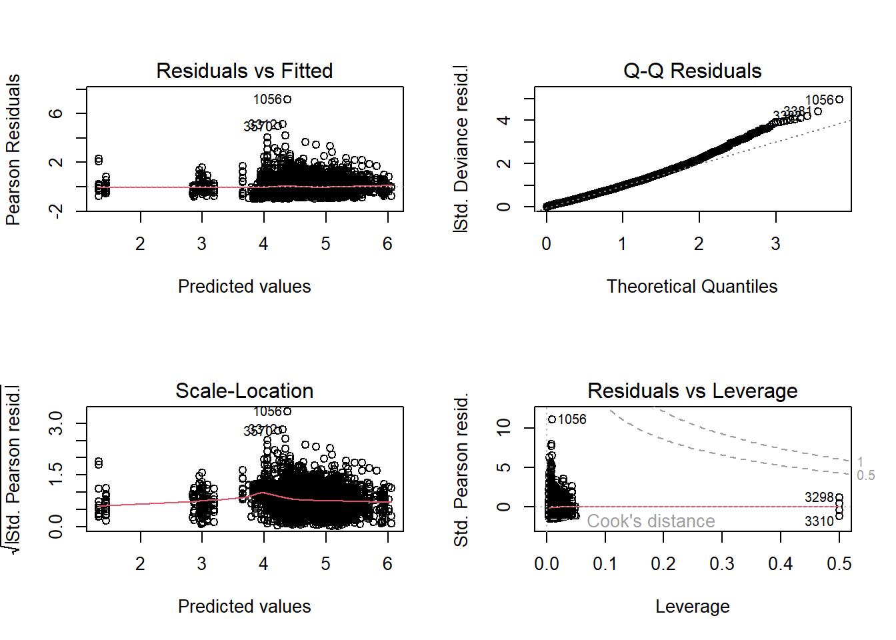
par(mfrow = c(1, 1))
# Диагностика остатков GLM с использованием DHARMa
sim_glm <- simulateResiduals(glm_gamma_fit, n = 1000, refit = FALSE)
plot(sim_glm, main = "GLM")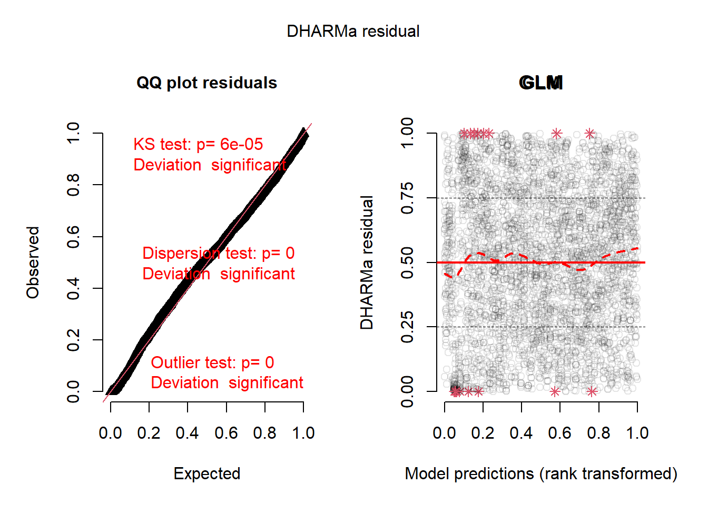
# Расчет и визуализация индексов
idx_glm <- emmeans_standardized_index(glm_gamma_fit) %>%
mutate(model = "GLM_Gamma",
index_mean = scale_to_index(value, "mean"),
index_first = scale_to_index(value, "first"))
# Добавление доверительных интервалов
idx_glm <- idx_glm %>%
mutate(
lcl_index_mean = scale_to_index(lcl, "mean"),
ucl_index_mean = scale_to_index(ucl, "mean")
)
# Визуализация индексов GLM
idx_glm %>%
ggplot(aes(x = YEAR, y = value, group = 1)) +
geom_line() +
geom_point() +
geom_ribbon(aes(ymin = lcl, ymax = ucl), alpha = 0.3) +
geom_point(data = actual_medians,
aes(x = YEAR, y = median_cpue),
shape = 4, # 4 соответствует крестику (x)
size = 3,
color = "black",
inherit.aes = FALSE)+
labs(title = "Индексы CPUE по GLM модели (крестики - факт)",
x = "Год",
y = "Стандартизированный индекс")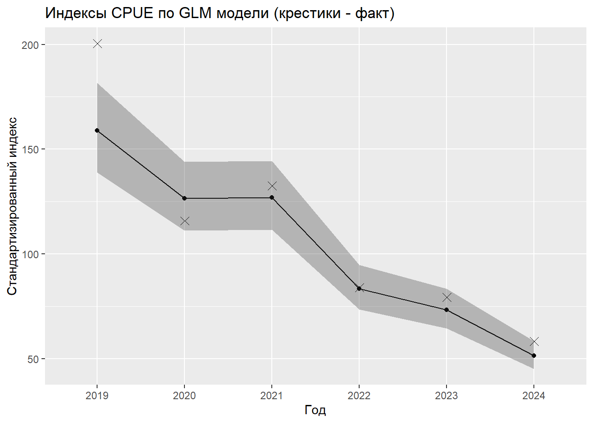
# ==============================================================================
# БЛОК 5: МОДЕЛИРОВАНИЕ GAM
# ==============================================================================
# Подбор обобщенной аддитивной модели
gam_fit <- gam(
CPUE_POS ~ YEAR + MONTH + CALL + REGION, # Линейная формула без сглаживания
family = Gamma(link = "log"), # Аналогичное GLM распределение
method = "REML", # Метод оптимизации гиперпараметров
data = DATA
)
summary(gam_fit) # Сводка модели
Family: Gamma
Link function: log
Formula:
CPUE_POS ~ YEAR + MONTH + CALL + REGION
Parametric coefficients:
Estimate Std. Error t value
(Intercept) 5.57646 0.07942 70.217
YEAR2020 -0.22712 0.04586 -4.953
YEAR2021 -0.22438 0.04557 -4.924
YEAR2022 -0.64329 0.04345 -14.806
YEAR2023 -0.77309 0.04647 -16.637
YEAR2024 -1.12812 0.05156 -21.878
MONTH10 -0.13725 0.02443 -5.617
MONTH11 -0.13714 0.03540 -3.874
CALLUAAK -0.29528 0.06092 -4.847
CALLUAKC -0.53484 0.06381 -8.381
CALLUBEV -3.67226 0.12187 -30.133
CALLUBQQ -0.35427 0.07057 -5.020
CALLUBSR -0.33512 0.06266 -5.348
CALLUBUR -0.58242 0.06175 -9.432
CALLUBYT -0.21516 0.06088 -3.534
CALLUCFF -0.06750 0.09825 -0.687
CALLUCXF -2.34296 0.10638 -22.025
CALLUDII -0.46282 0.05710 -8.106
CALLUDUT -1.02155 0.07550 -13.531
CALLUDWM -2.42497 0.09479 -25.581
CALLUEBK 0.25858 0.13371 1.934
CALLUEMO -0.17018 0.08103 -2.100
CALLUENZ 0.04934 0.06442 0.766
CALLUFIK 0.29706 0.13043 2.278
CALLUGXE -0.56375 0.06265 -8.998
CALLUIVO -0.21565 0.06500 -3.318
REGIONCEB.-ЦEHTPAЛЬHЫЙ P-H 0.16508 0.46672 0.354
REGIONCEB.CKЛOH MУPMAHCKOГO MEЛKOBOДЬЯ -0.07627 0.15513 -0.492
REGIONCEBEPO-KAHИHCKAЯ БAHKA 0.16322 0.08236 1.982
REGIONKAHИHCKAЯ БAHKA 0.06281 0.07875 0.798
REGIONKAHИHCKO- KOЛГУEBCKOE MEЛKOBOДЬE(CEB.CKЛOH) 0.21299 0.08519 2.500
REGIONKAHИHCKO-KOЛГУEBCKOE MEЛKOBOДЬE 0.18213 0.07757 2.348
REGIONMУPMAHCKOE MEЛKOBOДЬE 0.07728 0.07753 0.997
REGIONЗAП.-ПPИБPEЖHЫЙ P-H 0.72877 0.46327 1.573
REGIONЗAП.-ЦEHTPAЛЬHЫЙ P-H 0.13318 0.08416 1.583
REGIONЗAП.CKЛOH ГУCИHOЙ БAHKИ 0.64226 0.11646 5.515
REGIONЮЖ.CKЛOH ГУCИHOЙ БAHKИ 0.69310 0.13068 5.304
Pr(>|t|)
(Intercept) < 2e-16 ***
YEAR2020 7.62e-07 ***
YEAR2021 8.85e-07 ***
YEAR2022 < 2e-16 ***
YEAR2023 < 2e-16 ***
YEAR2024 < 2e-16 ***
MONTH10 2.08e-08 ***
MONTH11 0.000109 ***
CALLUAAK 1.30e-06 ***
CALLUAKC < 2e-16 ***
CALLUBEV < 2e-16 ***
CALLUBQQ 5.39e-07 ***
CALLUBSR 9.39e-08 ***
CALLUBUR < 2e-16 ***
CALLUBYT 0.000414 ***
CALLUCFF 0.492100
CALLUCXF < 2e-16 ***
CALLUDII 6.98e-16 ***
CALLUDUT < 2e-16 ***
CALLUDWM < 2e-16 ***
CALLUEBK 0.053187 .
CALLUEMO 0.035785 *
CALLUENZ 0.443735
CALLUFIK 0.022810 *
CALLUGXE < 2e-16 ***
CALLUIVO 0.000916 ***
REGIONCEB.-ЦEHTPAЛЬHЫЙ P-H 0.723578
REGIONCEB.CKЛOH MУPMAHCKOГO MEЛKOBOДЬЯ 0.623006
REGIONCEBEPO-KAHИHCKAЯ БAHKA 0.047563 *
REGIONKAHИHCKAЯ БAHKA 0.425185
REGIONKAHИHCKO- KOЛГУEBCKOE MEЛKOBOДЬE(CEB.CKЛOH) 0.012456 *
REGIONKAHИHCKO-KOЛГУEBCKOE MEЛKOBOДЬE 0.018931 *
REGIONMУPMAHCKOE MEЛKOBOДЬE 0.318981
REGIONЗAП.-ПPИБPEЖHЫЙ P-H 0.115776
REGIONЗAП.-ЦEHTPAЛЬHЫЙ P-H 0.113615
REGIONЗAП.CKЛOH ГУCИHOЙ БAHKИ 3.72e-08 ***
REGIONЮЖ.CKЛOH ГУCИHOЙ БAHKИ 1.20e-07 ***
---
Signif. codes: 0 '***' 0.001 '**' 0.01 '*' 0.05 '.' 0.1 ' ' 1
R-sq.(adj) = 0.397 Deviance explained = 40.1%
-REML = 21455 Scale est. = 0.41722 n = 3891# Проверка адекватности модели (графики остатков)
mgcv::gam.check(gam_fit)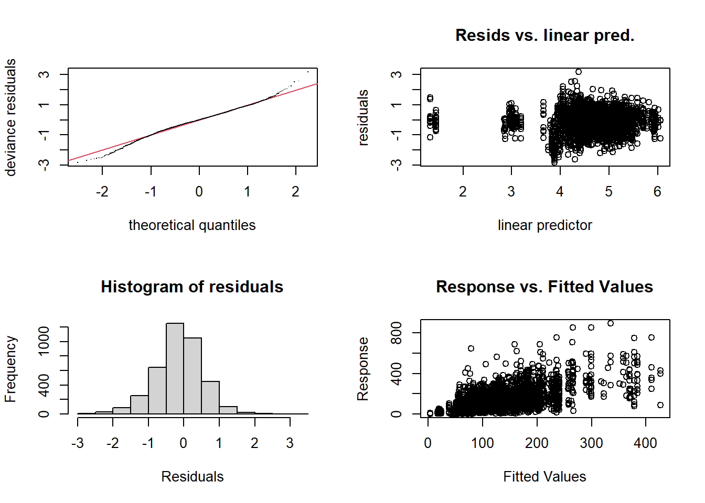
Method: REML Optimizer: outer newton
full convergence after 5 iterations.
Gradient range [-0.0003574844,-0.0003574844]
(score 21454.84 & scale 0.4172217).
Hessian positive definite, eigenvalue range [2198.061,2198.061].
Model rank = 37 / 37 # Диагностика остатков GAM с использованием DHARMa
sim_gam <- simulateResiduals(gam_fit, n = 1000, refit = FALSE)Registered S3 method overwritten by 'mgcViz':
method from
+.gg ggplot2plot(sim_gam, main = "GAM")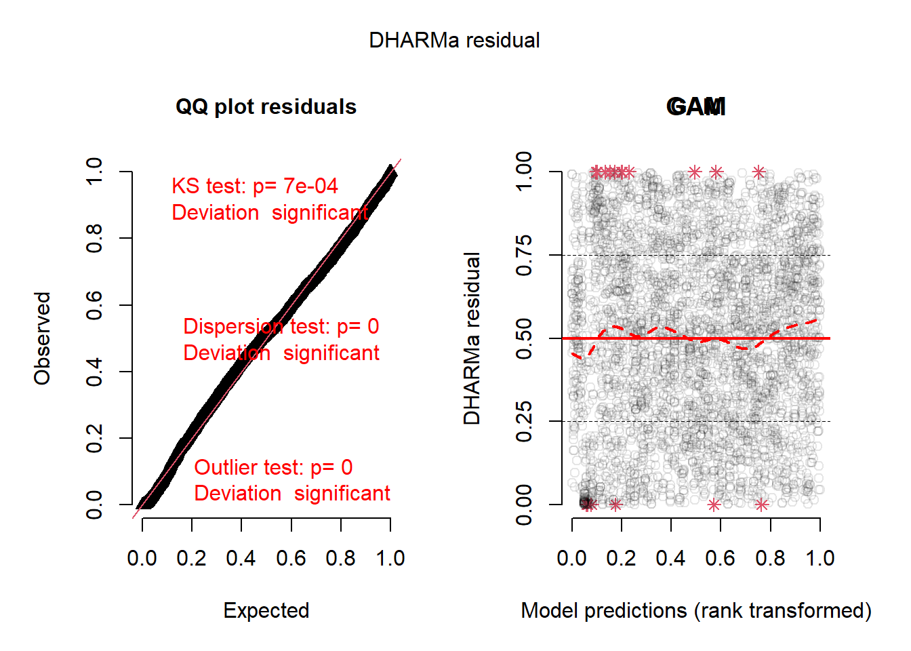
# Расчет индексов
idx_gam <- emmeans_standardized_index(gam_fit) %>%
mutate(model = "GAM",
index_mean = scale_to_index(value, "mean"),
index_first = scale_to_index(value, "first"))
# Доверительные интервалы
idx_gam <- idx_gam %>%
mutate(
lcl_index_mean = scale_to_index(lcl, "mean"),
ucl_index_mean = scale_to_index(ucl, "mean")
)
# Визуализация
idx_gam %>%
ggplot(aes(x = YEAR, y = value, group = 1)) +
geom_line() +
geom_point() +
geom_ribbon(aes(ymin = lcl, ymax = ucl), alpha = 0.3) +
geom_point(data = actual_medians,
aes(x = YEAR, y = median_cpue),
shape = 4, # 4 соответствует крестику (x)
size = 3,
color = "black",
inherit.aes = FALSE)+
labs(title = "Индексы CPUE по GAM модели (крестики - факт",
x = "Год",
y = "Стандартизированный индекс")Warning: <ggplot> %+% x was deprecated in ggplot2 4.0.0.
i Please use <ggplot> + x instead.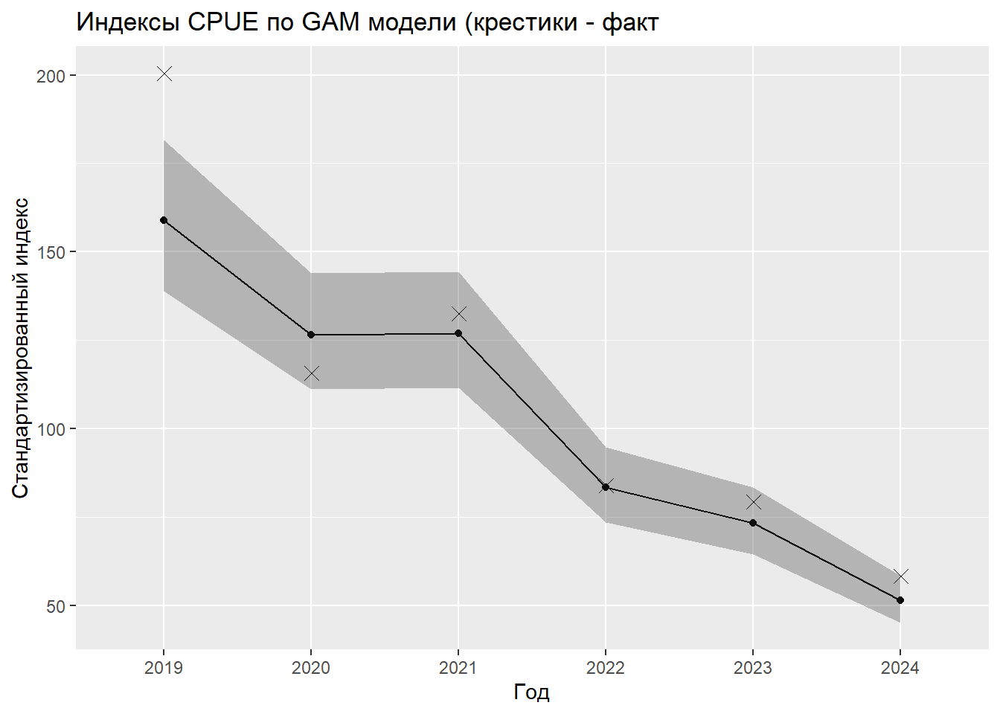
# ==============================================================================
# БЛОК 6: МОДЕЛИРОВАНИЕ GAMM (СМЕШАННАЯ МОДЕЛЬ)
# ==============================================================================
# Подбор модели со смешанными эффектами
gamm_fit <- gamm4::gamm4(
formula = CPUE_POS ~ YEAR + MONTH + REGION, # Фиксированные эффекты
random = ~ (1 | CALL), # Случайный эффект для судна
family = Gamma(link = "log"), # Распределение
data = DATA
)
# 1. График остатков от предсказанных значений
plot(fitted(gamm_fit$gam), residuals(gamm_fit$gam, type = "deviance"),
xlab = "Предсказанные значения", ylab = "Девиансные остатки",
main = "Остатки GAMM vs. Предсказания")
abline(h = 0, col = "red", lty = 2)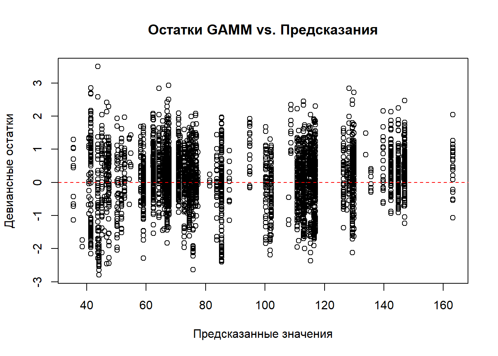
# 2. QQ-plot для остатков
qqnorm(residuals(gamm_fit$gam, type = "deviance"),
main = "QQ-plot для остатков GAMM")
qqline(residuals(gamm_fit$gam, type = "deviance"), col = "red")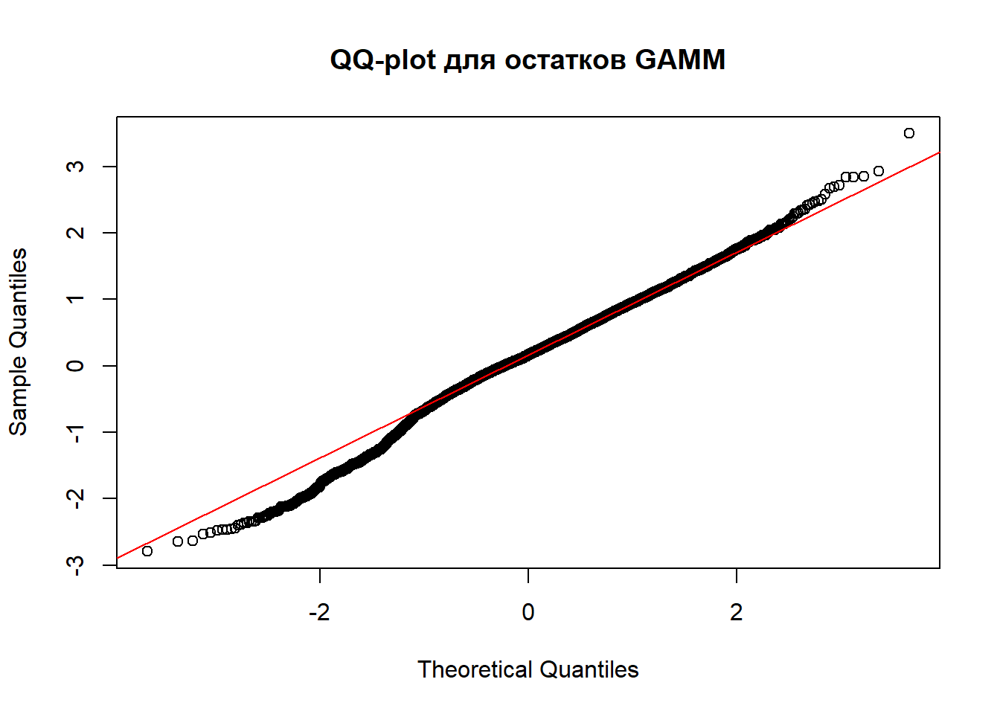
# 3. Диагностика случайных эффектов
cat("\nСлучайные эффекты (CALL):\n")
Случайные эффекты (CALL):print(summary(ranef(gamm_fit$mer)$CALL)) (Intercept)
Min. :-2.92229
1st Qu.: 0.09295
Median : 0.32996
Mean : 0.00306
3rd Qu.: 0.54065
Max. : 0.93271 # График случайных эффектов
random_effects <- ranef(gamm_fit$mer)$CALL
plot(density(random_effects[,1]), main = "Распределение случайных эффектов",
xlab = "Случайный эффект", ylab = "Плотность")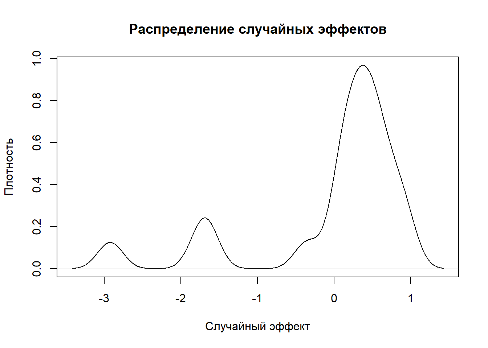
# 5. Проверка гетероскедастичности
library(lmtest)Загрузка требуемого пакета: zoo
Присоединяю пакет: 'zoo'Следующие объекты скрыты от 'package:base':
as.Date, as.Date.numericbptest(gamm_fit$gam$y ~ fitted(gamm_fit$gam)) %>%
print()
studentized Breusch-Pagan test
data: gamm_fit$gam$y ~ fitted(gamm_fit$gam)
BP = 222.14, df = 1, p-value < 2.2e-16# 6. Сводка по модели
cat("\nСводка GAMM модели:\n")
Сводка GAMM модели:print(summary(gamm_fit$gam))
Family: Gamma
Link function: log
Formula:
CPUE_POS ~ YEAR + MONTH + REGION
Parametric coefficients:
Estimate Std. Error t value
(Intercept) 4.91649 0.17171 28.632
YEAR2020 -0.23162 0.04580 -5.058
YEAR2021 -0.22798 0.04552 -5.008
YEAR2022 -0.64763 0.04338 -14.928
YEAR2023 -0.77570 0.04641 -16.716
YEAR2024 -1.13070 0.05152 -21.947
MONTH10 -0.13620 0.02445 -5.571
MONTH11 -0.13630 0.03542 -3.848
REGIONCEB.-ЦEHTPAЛЬHЫЙ P-H 0.16149 0.46710 0.346
REGIONCEB.CKЛOH MУPMAHCKOГO MEЛKOBOДЬЯ -0.08013 0.15524 -0.516
REGIONCEBEPO-KAHИHCKAЯ БAHKA 0.15971 0.08238 1.939
REGIONKAHИHCKAЯ БAHKA 0.05886 0.07877 0.747
REGIONKAHИHCKO- KOЛГУEBCKOE MEЛKOBOДЬE(CEB.CKЛOH) 0.20859 0.08522 2.448
REGIONKAHИHCKO-KOЛГУEBCKOE MEЛKOBOДЬE 0.17834 0.07759 2.299
REGIONMУPMAHCKOE MEЛKOBOДЬE 0.07353 0.07755 0.948
REGIONЗAП.-ПPИБPEЖHЫЙ P-H 0.72926 0.46366 1.573
REGIONЗAП.-ЦEHTPAЛЬHЫЙ P-H 0.12967 0.08419 1.540
REGIONЗAП.CKЛOH ГУCИHOЙ БAHKИ 0.63836 0.11653 5.478
REGIONЮЖ.CKЛOH ГУCИHOЙ БAHKИ 0.68988 0.13078 5.275
Pr(>|t|)
(Intercept) < 2e-16 ***
YEAR2020 4.44e-07 ***
YEAR2021 5.74e-07 ***
YEAR2022 < 2e-16 ***
YEAR2023 < 2e-16 ***
YEAR2024 < 2e-16 ***
MONTH10 2.70e-08 ***
MONTH11 0.000121 ***
REGIONCEB.-ЦEHTPAЛЬHЫЙ P-H 0.729566
REGIONCEB.CKЛOH MУPMAHCKOГO MEЛKOBOДЬЯ 0.605763
REGIONCEBEPO-KAHИHCKAЯ БAHKA 0.052628 .
REGIONKAHИHCKAЯ БAHKA 0.455013
REGIONKAHИHCKO- KOЛГУEBCKOE MEЛKOBOДЬE(CEB.CKЛOH) 0.014424 *
REGIONKAHИHCKO-KOЛГУEBCKOE MEЛKOBOДЬE 0.021580 *
REGIONMУPMAHCKOE MEЛKOBOДЬE 0.343099
REGIONЗAП.-ПPИБPEЖHЫЙ P-H 0.115842
REGIONЗAП.-ЦEHTPAЛЬHЫЙ P-H 0.123604
REGIONЗAП.CKЛOH ГУCИHOЙ БAHKИ 4.57e-08 ***
REGIONЮЖ.CKЛOH ГУCИHOЙ БAHKИ 1.40e-07 ***
---
Signif. codes: 0 '***' 0.001 '**' 0.01 '*' 0.05 '.' 0.1 ' ' 1
R-sq.(adj) = 0.172
glmer.ML = 1786 Scale est. = 0.41793 n = 3891print(summary(gamm_fit$mer))Generalized linear mixed model fit by maximum likelihood (Laplace
Approximation) [glmerMod]
Family: Gamma ( log )
AIC BIC logLik -2*log(L) df.resid
42933.5 43065.1 -21445.7 42891.5 3870
Scaled residuals:
Min 1Q Median 3Q Max
-1.5364 -0.6769 -0.1721 0.4716 11.0577
Random effects:
Groups Name Variance Std.Dev.
CALL (Intercept) 0.4320 0.6573
Residual 0.4179 0.6465
Number of obs: 3891, groups: CALL, 19
Fixed effects:
Estimate Std. Error t value
X(Intercept) 4.91649 0.23488 20.932
XYEAR2020 -0.23162 0.02474 -9.363
XYEAR2021 -0.22798 0.02513 -9.073
XYEAR2022 -0.64763 0.02299 -28.167
XYEAR2023 -0.77570 0.02376 -32.652
XYEAR2024 -1.13070 0.02603 -43.443
XMONTH10 -0.13620 0.01914 -7.116
XMONTH11 -0.13630 0.02359 -5.777
XREGIONCEB.-ЦEHTPAЛЬHЫЙ P-H 0.16149 0.46456 0.348
XREGIONCEB.CKЛOH MУPMAHCKOГO MEЛKOBOДЬЯ -0.08013 0.03506 -2.285
XREGIONCEBEPO-KAHИHCKAЯ БAHKA 0.15971 0.02670 5.982
XREGIONKAHИHCKAЯ БAHKA 0.05886 0.02653 2.218
XREGIONKAHИHCKO- KOЛГУEBCKOE MEЛKOBOДЬE(CEB.CKЛOH) 0.20859 0.02808 7.428
XREGIONKAHИHCKO-KOЛГУEBCKOE MEЛKOBOДЬE 0.17834 0.02200 8.108
XREGIONMУPMAHCKOE MEЛKOBOДЬE 0.07353 0.02318 3.172
XREGIONЗAП.-ПPИБPEЖHЫЙ P-H 0.72926 0.46533 1.567
XREGIONЗAП.-ЦEHTPAЛЬHЫЙ P-H 0.12967 0.02736 4.739
XREGIONЗAП.CKЛOH ГУCИHOЙ БAHKИ 0.63836 0.03291 19.400
XREGIONЮЖ.CKЛOH ГУCИHOЙ БAHKИ 0.68988 0.03447 20.015
Pr(>|z|)
X(Intercept) < 2e-16 ***
XYEAR2020 < 2e-16 ***
XYEAR2021 < 2e-16 ***
XYEAR2022 < 2e-16 ***
XYEAR2023 < 2e-16 ***
XYEAR2024 < 2e-16 ***
XMONTH10 1.11e-12 ***
XMONTH11 7.60e-09 ***
XREGIONCEB.-ЦEHTPAЛЬHЫЙ P-H 0.72813
XREGIONCEB.CKЛOH MУPMAHCKOГO MEЛKOBOДЬЯ 0.02229 *
XREGIONCEBEPO-KAHИHCKAЯ БAHKA 2.20e-09 ***
XREGIONKAHИHCKAЯ БAHKA 0.02654 *
XREGIONKAHИHCKO- KOЛГУEBCKOE MEЛKOBOДЬE(CEB.CKЛOH) 1.10e-13 ***
XREGIONKAHИHCKO-KOЛГУEBCKOE MEЛKOBOДЬE 5.16e-16 ***
XREGIONMУPMAHCKOE MEЛKOBOДЬE 0.00151 **
XREGIONЗAП.-ПPИБPEЖHЫЙ P-H 0.11707
XREGIONЗAП.-ЦEHTPAЛЬHЫЙ P-H 2.15e-06 ***
XREGIONЗAП.CKЛOH ГУCИHOЙ БAHKИ < 2e-16 ***
XREGIONЮЖ.CKЛOH ГУCИHOЙ БAHKИ < 2e-16 ***
---
Signif. codes: 0 '***' 0.001 '**' 0.01 '*' 0.05 '.' 0.1 ' ' 1
Correlation matrix not shown by default, as p = 19 > 12.
Use print(summary(gamm_fit$mer), correlation=TRUE) or
vcov(summary(gamm_fit$mer)) if you need it# Создание сетки для предсказания
newdata_grid <- expand.grid(
YEAR = levels(DATA$YEAR),
MONTH = levels(DATA$MONTH),
REGION = levels(DATA$REGION),
CALL = levels(DATA$CALL)[1] # Фиксированное значение для случайного эффекта
)
# Предсказание на сетке
newdata_grid$pred <- predict(gamm_fit$gam,
newdata = newdata_grid,
type = "response")
# Усреднение предсказаний по годам
idx_gamm <- newdata_grid %>%
group_by(YEAR) %>%
summarise(value = mean(pred, na.rm = TRUE)) %>%
mutate(
model = "GAMM (mgcv)",
index_mean = scale_to_index(value, "mean"),
index_first = scale_to_index(value, "first")
)
# Функция расчета доверительных интервалов через бутстреп
compute_gamm_ci <- function(model, newdata, n_boot = 100) {
boot_means <- replicate(n_boot, {
boot_data <- newdata[sample(nrow(newdata), replace = TRUE), ]
preds <- predict(model, newdata = boot_data, type = "response")
boot_data %>%
mutate(pred = preds) %>%
group_by(YEAR) %>%
summarise(mean_pred = mean(pred, na.rm = TRUE)) %>%
pull(mean_pred)
})
ci <- apply(boot_means, 1, function(x) quantile(x, c(0.025, 0.975), na.rm = TRUE))
return(list(mean = rowMeans(boot_means), lcl = ci[1, ], ucl = ci[2, ]))
}
# Расчет интервалов
gamm_ci <- compute_gamm_ci(gamm_fit$gam, newdata_grid)
# Добавление интервалов к индексам
idx_gamm <- idx_gamm %>%
mutate(
lcl = gamm_ci$lcl,
ucl = gamm_ci$ucl,
lcl_index_mean = scale_to_index(lcl, "mean"),
ucl_index_mean = scale_to_index(ucl, "mean")
)
# Визуализация
idx_gamm %>%
ggplot(aes(x = YEAR, y = value, group = 1)) +
geom_line() +
geom_point() +
geom_ribbon(aes(ymin = lcl, ymax = ucl), alpha = 0.3) +
geom_point(data = actual_medians,
aes(x = YEAR, y = median_cpue),
shape = 4, # 4 соответствует крестику (x)
size = 3,
color = "black",
inherit.aes = FALSE)+
labs(title = "Индексы CPUE по GAMM модели (крестики - факт)",
x = "Год",
y = "Стандартизированный индекс")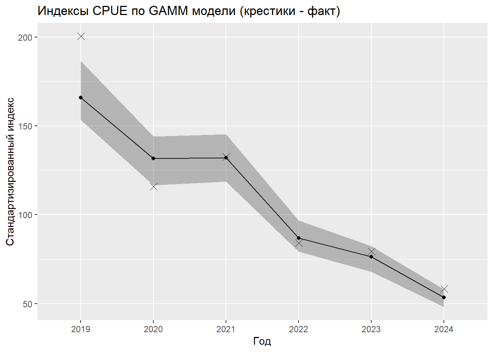
# ==============================================================================
# БЛОК 7: СРАВНЕНИЕ МОДЕЛЕЙ И ФИНАЛЬНАЯ ВИЗУАЛИЗАЦИЯ
# ==============================================================================
# Объединение результатов всех моделей
indices_all <- bind_rows(
idx_glm %>% select(YEAR, value, lcl, ucl, model, index_mean, lcl_index_mean, ucl_index_mean),
idx_gam %>% select(YEAR, value, lcl, ucl, model, index_mean, lcl_index_mean, ucl_index_mean),
idx_gamm %>% select(YEAR, value, lcl, ucl, model, index_mean, lcl_index_mean, ucl_index_mean)
) %>% mutate(YEAR = factor(YEAR, levels = levels(DATA$YEAR)))
# Сводная таблица результатов
indices_all %>%
kable(caption = "Сравнение индексов CPUE по разным моделям")| YEAR | value | lcl | ucl | model | index_mean | lcl_index_mean | ucl_index_mean |
|---|---|---|---|---|---|---|---|
| 2019 | 158.81216 | 138.93290 | 181.53585 | GLM_Gamma | 1.5358638 | 1.5299542 | 1.5417869 |
| 2020 | 126.54457 | 111.15088 | 144.07018 | GLM_Gamma | 1.2238057 | 1.2240136 | 1.2235904 |
| 2021 | 126.89292 | 111.57409 | 144.31498 | GLM_Gamma | 1.2271746 | 1.2286741 | 1.2256695 |
| 2022 | 83.46580 | 73.52525 | 94.75032 | GLM_Gamma | 0.8071933 | 0.8096733 | 0.8047160 |
| 2023 | 73.30390 | 64.40714 | 83.42960 | GLM_Gamma | 0.7089181 | 0.7092631 | 0.7085690 |
| 2024 | 51.39565 | 45.26094 | 58.36186 | GLM_Gamma | 0.4970445 | 0.4984216 | 0.4956683 |
| 2019 | 158.81218 | 138.93304 | 181.53572 | GAM | 1.5358554 | 1.5299458 | 1.5417784 |
| 2020 | 126.54503 | 111.15138 | 144.07058 | GAM | 1.2238033 | 1.2240112 | 1.2235880 |
| 2021 | 126.89280 | 111.57408 | 144.31473 | GAM | 1.2271665 | 1.2286660 | 1.2256615 |
| 2022 | 83.46561 | 73.52514 | 94.75002 | GAM | 0.8071869 | 0.8096669 | 0.8047096 |
| 2023 | 73.30495 | 64.40811 | 83.43072 | GAM | 0.7089242 | 0.7092692 | 0.7085751 |
| 2024 | 51.39792 | 45.26297 | 58.36439 | GAM | 0.4970637 | 0.4984408 | 0.4956874 |
| 2019 | 165.88930 | 153.27889 | 186.43794 | GAMM (mgcv) | 1.5400976 | 1.5751123 | 1.5695052 |
| 2020 | 131.59142 | 116.54705 | 144.02703 | GAMM (mgcv) | 1.2216800 | 1.1976514 | 1.2124741 |
| 2021 | 132.07110 | 118.64017 | 145.21926 | GAMM (mgcv) | 1.2261333 | 1.2191606 | 1.2225107 |
| 2022 | 86.80692 | 79.26688 | 96.71028 | GAMM (mgcv) | 0.8059057 | 0.8145559 | 0.8141438 |
| 2023 | 76.37202 | 67.94329 | 82.24327 | GAMM (mgcv) | 0.7090292 | 0.6981933 | 0.6923550 |
| 2024 | 53.55022 | 48.20170 | 58.08852 | GAMM (mgcv) | 0.4971542 | 0.4953264 | 0.4890111 |
indices_all %>%
ggplot(aes(x = YEAR, y = value, color = model, group = model, fill = model)) +
geom_line() +
geom_point() +
geom_ribbon(aes(ymin = lcl, ymax = ucl), alpha = 0.1, linetype = "dashed") +
geom_point(data = actual_medians,
aes(x = YEAR, y = median_cpue),
shape = 4, # 4 соответствует крестику (x)
size = 3,
color = "black",
inherit.aes = FALSE)+
labs(title = "Сравнение стандартизированных индексов CPUE (крестики - факт)",
x = "Год",
y = "Индекс CPUE (кг/ловушку)",
color = "Модель",
fill = "Модель") +
theme(legend.position = "bottom")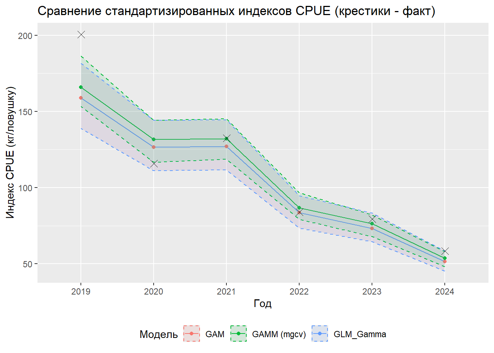
# ==============================================================================
# БЛОК 9: СРАВНЕНИЕ МОДЕЛЕЙ ПО ИНФОРМАЦИОННЫМ КРИТЕРИЯМ
# ==============================================================================
cat("\n=== СРАВНИТЕЛЬНЫЙ АНАЛИЗ МОДЕЛЕЙ ПО ИНФОРМАЦИОННЫМ КРИТЕРИЯМ ===\n")
=== СРАВНИТЕЛЬНЫЙ АНАЛИЗ МОДЕЛЕЙ ПО ИНФОРМАЦИОННЫМ КРИТЕРИЯМ ===# Упрощенная функция для извлечения ключевых критериев из моделей
extract_model_metrics <- function(model, model_name, model_type = "glm") {
if (model_type == "glm") {
aic_val <- AIC(model)
bic_val <- BIC(model)
loglik_val <- as.numeric(logLik(model))
df_val <- model$rank
null_dev <- model$null.deviance
dev <- model$deviance
} else if (model_type == "gam") {
aic_val <- AIC(model)
bic_val <- BIC(model)
loglik_val <- as.numeric(logLik(model))
df_val <- sum(model$edf)
null_dev <- model$null.deviance
dev <- model$deviance
} else if (model_type == "gamm") {
aic_val <- AIC(model$mer)
bic_val <- BIC(model$mer)
loglik_val <- as.numeric(logLik(model$mer))
df_val <- length(fixef(model$mer)) + 1 # +1 для случайного эффекта
null_dev <- model$gam$null.deviance
dev <- model$gam$deviance
}
# Вычисляем долю объясненной девиации
deviance_explained <- ifelse(!is.null(null_dev) && !is.null(dev) && null_dev > 0,
(null_dev - dev) / null_dev, NA)
data.frame(
Model = model_name,
AIC = round(aic_val, 2),
BIC = round(bic_val, 2),
LogLik = round(loglik_val, 2),
DF = round(df_val, 2),
Deviance_Explained = round(deviance_explained, 4)
)
}
# Извлекаем метрики для всех моделей
model_metrics <- bind_rows(
extract_model_metrics(glm_gamma_fit, "GLM (Gamma)", "glm"),
extract_model_metrics(gam_fit, "GAM", "gam"),
extract_model_metrics(gamm_fit, "GAMM", "gamm")
)
# Добавляем разницу в AIC относительно наилучшей модели
min_aic <- min(model_metrics$AIC)
model_metrics <- model_metrics %>%
mutate(Delta_AIC = AIC - min_aic,
AIC_Weight = exp(-0.5 * Delta_AIC) / sum(exp(-0.5 * Delta_AIC)))
# Форматируем таблицу для вывода
comparison_table <- model_metrics %>%
mutate(across(where(is.numeric), ~round(., 3))) %>%
arrange(AIC) # Сортируем по AIC (лучшая модель первая)
# Выводим таблицу сравнения
cat("\nТАБЛИЦА СРАВНЕНИЯ МОДЕЛЕЙ:\n")
ТАБЛИЦА СРАВНЕНИЯ МОДЕЛЕЙ:print(comparison_table) Model AIC BIC LogLik DF Deviance_Explained Delta_AIC
1 GAM 42840.91 43079.03 -21382.45 37 0.401 0.00
2 GLM (Gamma) 42850.76 43088.88 -21387.38 37 0.401 9.85
3 GAMM 42933.49 43065.09 -21445.75 20 NA 92.58
AIC_Weight
1 0.993
2 0.007
3 0.000# Выводим итоговые рекомендации
cat("\n=== ИТОГОВЫЕ РЕКОМЕНДАЦИИ ПО ВЫБОРУ МОДЕЛИ ===\n")
=== ИТОГОВЫЕ РЕКОМЕНДАЦИИ ПО ВЫБОРУ МОДЕЛИ ===best_model <- comparison_table$Model[1]
cat("Наилучшая модель по критерию AIC:", best_model, "\n")Наилучшая модель по критерию AIC: GAM cat("Вес AIC для наилучшей модели:", round(comparison_table$AIC_Weight[1], 3), "\n")Вес AIC для наилучшей модели: 0.993 if (nrow(comparison_table) > 1 && comparison_table$Delta_AIC[2] > 2) {
cat("Наилучшая модель существенно лучше остальных (?AIC > 2).\n")
} else if (nrow(comparison_table) > 1) {
cat("Несколько моделей имеют сходное качество (?AIC < 2).\n")
}Наилучшая модель существенно лучше остальных (?AIC > 2).cat("Доля объясненной девиации наилучшей модели:",
round(comparison_table$Deviance_Explained[1], 3), "\n")Доля объясненной девиации наилучшей модели: 0.401